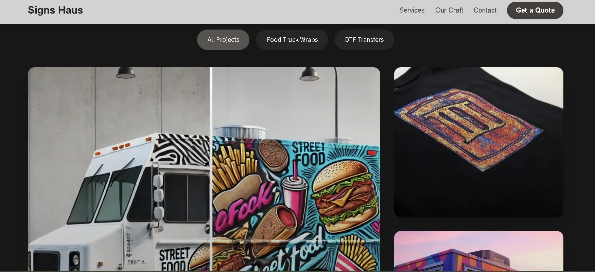
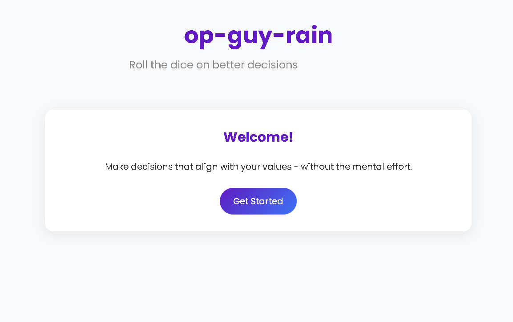

About Me
I've worn many hats and lived in many places. People, in all their variety, are my favorite subject.
Technology has always been my tailwind. My family is my anchor.
Technical Skills
Extensive experience supporting and configuring B2B SaaS and web-based tools.
Skilled in diagnosing cloud configurations, integrations, and browser-based issues.
Proficient in CRM platforms, case systems, SOPs, and knowledge base management.
Strong communication with product, engineering, and leadership teams.
Used tools like Cursor AI, Claude Sonnet 3.7, and ChatGPT workflows for efficiency.
Professional Experience
Tesla
Service Technician
- Diagnosed and resolved complex technical and mechanical issues on site and remote
- Continual education on vehicle tech to improve service metrics
- Assisted in roles beyond my responsibilities to gain perspective of the entire customer journey
Skuid Inc.
Technical Support Engineer
- Supported customers via multiple communication channels.
- Assisted with core product features, Salesforce configuration & integration
- Created & maintained knowledge base articles
- Shared proactive updates on product issues
- Collaborated with cross-functional teams to resolve complex customer issues
HWMG
Appeals Coordinator
- Researched and addressed customer appeal requests.
- Scheduled and facilitated executive appeal reviews.
- Coordinated responses with legal and DOI.
- Identified trends and recommended service improvements.
BlueCross/BlueShield TN
Quality Examiner
- Promoted through multiple support roles
- Audited calls and correspondence ensuring service quality
- Implemented policies and process improvements
Education & Certifications
Dev Bootcamp Graduate
20-week immersive full-stack web development program focused on Ruby, Rails, JavaScript, HTML/CSS, SQL, Git, Agile methodologies, and Test-Driven Development (TDD).
Projects & Portfolio

Signs Haus
A website for a local sign company, prioritizing mobile responsiveness and a quote form. Built with Next.js, Tailwind CSS, and TypeScript.

Op-Guy-Rain
A passion project-web app that eliminates decision fatigue by providing personalized suggestions using DeepSeek's chat model.